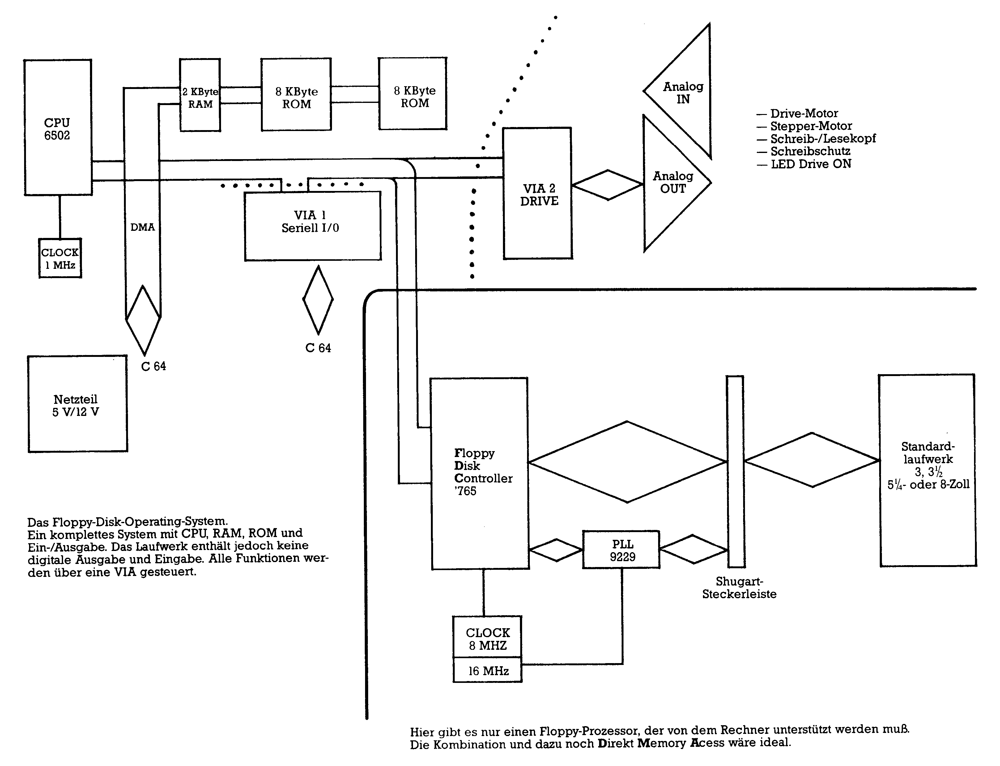
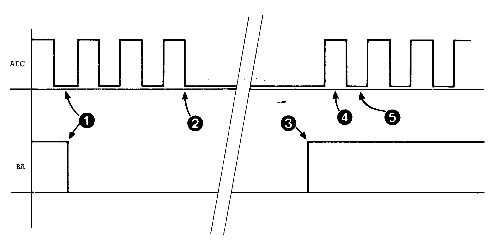

Kennen Sie Ihren C 64? (Teil II)
Haben Sie sich eigentlich schon mal Gedanken darüber gemacht, wie der C 64 funktioniert? Wir wollen Ihnen in dieser Reihe zeigen, wie man dem C 64 auf die Schliche kommt.
Keine Angst — wir fangen langsam mit den Grundlagen an, um uns Stück für Stück vorzuarbeiten, bis der C 64 wie ein gläserner Computer vor uns steht. Was ist dran an der »Hintertür«, die wir im ersten Teil beschrieben haben? Was kann man damit machen? Nun, die Antwort ist relativ einfach, denn die »Hintertür« ist die einzige Möglichkeit, auf preisgünstige Weise ein beliebiges Standard-Diskettenlaufwerk mit FDC (Floppy-Disk-Controller) an den C 64 anzuschließen (Bild 1). Dazu wäre es interessant, zu wissen, wie dieser Eingang (SO) in der 6510-CPU tatsächlich funktioniert. Doch das ist ein Geheimnis der CPU-Entwickler. Besitzer der (längst vergriffenen) Original-Dokumentation über diese CPU finden nur den lapidaren Hinweis: Das ist zur Zusammenarbeit mit einem künftigen Baustein vorgesehen und sollte normalerweise nicht benutzt werden. Der »künftige« Baustein ist jedoch leider nie auf dem Markt erschienen.

Die Commodore-Entwickler haben beim C 64 diesen Signaleingang nicht mehr aus der 6510-CPU herausgeführt. Diese CPU ist übrigens nichts anderes als eine 6502-CPU mit einem Port und Steuereingängen für die Zusammenarbeit mit dem GDP (Grafik Display Prozessor oder Video-Chip). Nun gibt es eine unzählige Schar von Freaks und Hackern, die gerade beim C 64 auch den letzten POKE- oder PEEK-Befehl kennen. Doch wie sieht es mit der Sprache aus, die die 6510-CPU »spricht«? Assembler ist nicht nur Voraussetzung zum echten Messen, Steuern, Regeln und schnellen Spielen, sondern im Vergleich zum vorhandenen Basic (man könnte dem C 64 auch ein schnelleres Basic »einpflanzen«) fünf bis zehntausend mal schneller. Aufgrund jahrelanger Praxis in der Ausbildung kann behauptet werden, daß Assembler in der gleichen Zeit wie Basic erlernbar ist. Jede höhere Programmiersprache, und sei sie noch so komplex (zum Beispiel ADA oder C), muß am Ende von einer CPU ausgeführt werden. Und die »spricht« nur ihren speziellen Assembler.
Eine CPU kann man mit einem kompletten Computersystem vergleichen. Auch hier gibt es einen Interpreter (wie Basic ebenfalls interpretiert wird). Der Interpreter in der CPU bekommt über dem Datenbus ein Byte, und das wird in der CPU interpretiert. Das geschieht in dem Instruktionsregister des Prozessors. Ist das Byte nicht interpretierbar, »stürzt« der Computer ab und es hilft nur noch ein Reset.
Im Gegensatz zur Maschinensprache gibt es im Basic einen Notausgang. Wird ein Befehl nicht gefunden (weil er nicht in der Interpreterliste steht) oder kann er nicht ausgeführt werden (weil zum Beispiel keine Floppy angeschlossen ist oder per Befehl mathematisch nicht ausführbar ist, etc.), erzeugt das Betriebssystem (natürlich in Assembler geschrieben) eine Fehlermeldung. Die einfachste Fehlermeldung ist »SYNTAX ERROR«.
Wird ein Basic-Befehl eingegeben (oder im Programm abgearbeitet), sucht die CPU im Basic-Interpreter den Befehl und die entsprechende Routine dazu und führt sie aus. Die Routine ist natürlich wieder in Assembler geschrieben. Das alles braucht sehr viel Zeit.
Der eigentliche Chef
Doch das ist längst noch nicht alles. Nebenbei muß die CPU noch die Interrupt-Request-Routine (IRQ) bedienen. Sie wird ausgelöst durch den Timer eines Portbausteins (CIA 6526) des C 64. Die CPU unterbricht das Programm, rettet alle Register und führt die Routine aus. Diese Assembler-Routine wird 60mal pro Sekunde durchlaufen.
Dann ist da noch der Video-Chip VIC 6569 (GDP). Er sorgt für das Bild und die RAM-Auffrischung (Bild 2). Der GDP unterbricht dann die CPU, weil auf einem Bus ja nur einer arbeiten kann. Wenn der GDP auf dem Daten- und Adreßbus arbeitet, führt er direkte Speicherzugriffe (DMA) aus. Die Signalleitung dazu heißt »Bus available« (BA, Bus verfügbar) und geht zum CPU-Eingang »READY«. Das Signal »BA« müßte eigentlich »DMA« (Direct Memory Access) oder »Halt« heißen, denn wenn diese Signalleitung auf Low geht, wird der CPU sozusagen die »rote Karte« gezeigt. Das heißt, die CPU hat ihre Aktivitäten einzustellen, und von Daten- und Adreßbus zu verschwinden. Da sie das meistens nicht sofort kann, gibt ihr der GDP noch drei Taktzyklen Zeit, um »die Beine hochzunehmen«. Der Zugriff auf den Leitungen regelt die Signalleitung »Adress-Enable-Control« (AEC). Der Zustand High dieser Leitung bedeutet, daß die CPU aktiv ist, Low gibt dem GDP Vorrang, geht also »BA« auf Low, wartet der GDP noch drei Taktzyklen. Danach geht AEC so lange auf Low, bis die Arbeit des GDP beendet ist. Es ist sehr wichtig, daß vor dem Zugriff (DMA) noch drei Taktzyklen gewartet wird, da sonst das System abstürzt. Dieses ganze Timing muß auch ein Baustein »wissen«, der eigentlich die gesamte Koordinierung im System durchführt: das PLA-IC 251 064-01. Dieser Baustein ist ein programmierbares Logic-Array, das heißt Signale, die hineingehen, erscheinen an den Ausgängen je nach vorheriger Programmierung in Abhängigkeit der gewünschten Verknüpfung.
Dieser Adreßmanager ist für Entwickler ein alter Bekannter, nämlich das IC 82 S 100 von Intel oder Signetics. Commodore hatte bei den ersten Prototypen des C 64 auch dieses IC benutzt. Aber warum sollte es in Serie von Intel oder Signetics kommen, schließlich hat Commodore einen eigenen Prozessorhersteller im Haus: MOS Technologies.
Ob der GDP die CPU anhält, bestimmt wiederum am Anfang die CPU, denn beim Hochlaufen des Systems (Reset oder Kaltstart) wird der GDP auf Zugriff programmiert. Und wenn die CPU das macht, kann das ein Programmierer natürlich ebenfalls. Da alle diese Aktivitäten durch Steuerregister ausgelöst werden, kann man sowohl den GDP als auch den IRQ der CPU abschalten. Das in Basic geschriebene Beispiel (Bild 3 und Bild 4) zeigt eine beachtliche Zeitersparnis. Hier greift der GDP nicht mehr in den Lauf der CPU ein und auch die Interruptroutine braucht die CPU nicht mehr zu durchlaufen. Beim Sortieren von großen Feldern oder Rechnen mit komplexen Formeln empfiehlt sich diese Methode. Da der GDP abgeschaltet wurde, erscheint jedoch kein Bild. Auch verhindert die gesperrte IRQ-Routine eine Tastaturabfrage.
Alle Vorgänge werden im System durch Signale (Low und High) gesteuert. Der Systemtakt beim C 64 beträgt zirka 980 kHz, das heißt 980 000mal pro Sekunde »passiert etwas« im System.
Um verfolgen zu können, wer zu welchem Zeitpunkt was und wo macht, bleibt also wenig Zeit.
Nehmen wir einmal an, daß wir ein Programm im C 64 gestartet haben. Ist es ein Basic-Programm, so können wir im Problemfall ja mit einer Fehlermeldung rechnen, bei einem Assemblerprogramm bekanntlich nicht. Selbst die erfahrensten Assemblerprogrammierer verbringen Stunden mit einem Programmfehler, ohne ihn zu finden. Mit anderen Worten, wenn in diesem Artikel Schreibfehler sind, weiß der Leser meistens trotzdem, was gemeint ist — eine CPU aber verzeiht nicht den kleinsten Fehler. Fehlerbeseitigung in einem Programm ist also eine Frage des Wissens, der Zeit und der Meßmittel. Datenanalyser oder Datenlogger liegen leider preislich ab 20 000 Mark aufwärts. Außerdem gibt es für den C 64 keine.
Diese Geräte zeichnen einen Signalverlauf im System auf. Der Adreßbus besteht zum Beispiel aus 16 Leitungen. Will die CPU ein Byte von einer Adresse holen, muß sie auf den 16 Leitungen die entsprechende Binärkombination setzen, um das Byte auf dem Datenbus »serviert« zu bekommen. Dazu muß noch der Baustein selektiert (Chip select) und das Signal R/W gesetzt werden. Der C 64 arbeitet Low-Aktiv, das heißt wenn eine Leitung auf Low ist, ist das Bit gesetzt.
Um auf unser Problem zurückzukommen — wenn wir wissen wollen, was die CPU in Echtzeit bei welcher Adresse was macht, müssen wir diese Signale sichtbar machen. Man könnte ja auch die CPU nach jedem Schritt anhalten, um die Ausführung eines Programms zu überwachen, doch in Echtzeit (bei »echtem« Systemtakt) läuft es dann meistens doch nicht. Die Idee, durch Leuchtdioden die Signale sichtbar zu machen, scheint sehr abwegig. Das menschliche Auge hat ein Auflösungsvermögen von maximal 30 bis 40 Hz. Alle Leuchtdioden würden demnach auf einmal leuchten, und man würde keine Adresse oder Daten erkennen können.
Aber so unglaublich das klingt, genau diese menschliche Schwäche kann man sich beim Bau eines solchen Busmonitors zunutzemachen. Würde man diese Signale weiter ausdecodieren, und die Adresse auf einem Display dezimal oder hexadezimal anzeigen, könnte man in Echtzeit keine Adresse mehr erkennen. Doch zeigt man in Echtzeit den Wechsel zwischen Low und High mit einem Schaltungstrick an, erkennt man klar, wo die CPU im System »herumläuft«.
Der Busmonitor arbeitet hier im Labor seit mehr als zwei Jahren problemlos. Er zeigt auf einen Blick, wo die CPU im Adreßraum »läuft« und welche Routinen sie benutzt. Außerdem kann er in erweiterter Form anzeigen, an welcher Adresse welches Byte verarbeitet wird.
Natürlich belegen diese Bus-Monitore weder Adreßraum noch sind sie auf Software angewiesen. Denn dadurch würden sie ja einen »normalen« C 64 verändern. Auch sogenannte Geheimbefehle im Assembler bereiten den Monitoren keine Probleme. Hier wird nur angezeigt, was eine CPU immer tun muß: Bei laufendem Systemtakt holt oder bringt die CPU ein Byte und dazu muß sie ja den Adreß- und Datenbus benutzen. Doch davon später mehr.
Der Monitor läßt sich auch gut benutzen zum Erlernen der Maschinensprache, da ein geschriebenes Programm jederzeit über den Monitor verfolgt werden kann. Wer einigermaßen mit dem Lötkolben umgehen kann und eine Investition von zirka 40 Mark nicht scheut, sollte seine Arbeitsmaterialien für unsere »Entdeckungsreisen« in den nächsten Folgen gleich bereitlegen.
Hier das Zeitdiagramm zur DMA. Die zeitliche Reihenfolge wird vom GDP gesteuert. Das Signal AEC vom GDP ist direkt mit den Adreßausgängen der CPU verbunden, das Signal BA mit dem Eingang Ready.

1 Wenn AEC Low ist und der GDP will DMA, geht das Signal »BA« auf Low.
2 Die CPU hat drei Taktzyklen Zeit gehabt, um ihren Systemzugriff abzuschließen. Jetzt bleibt AEC auf Low und schaltet den Adreßbus hochohmig, das heißt der Bus ist signalmäßig nicht vorhanden. Auch der Datenbus und das Schreib-/Lesesignal sind hochohmig geworden.
3 Hat der Master seine Arbeit beendet, setzt er das Signal »BA« auf High.
4 Kurze Zeit später geht das Signal AEC auf High und die CPU arbeitet wieder weiter im System.
5 AEC geht auf Low, doch die CPU arbeitet immer nur, wenn AEC High ist. Es wird also kein DMA durchgeführt.
DMA wird also nur von dem Signal »BA« ausgelöst. Dieses Signal steht auch am Expansion-Port zur Verfügung, da ein DMA von außen nur erfolgen darf, wenn der Master nicht im System ist.
| LINE | ADRESSE | CODE | MNEMO-MIC | TAKTZYKLEN |
|---|---|---|---|---|
| 0001 | 1000 | 78 | SEI | 2 |
| 0002 | 1001 | A9 00 | LDA #$00 | 2 |
| 0003 | 1003 | 8D 11 D0 | STA $D011 | 4 |
| 0004 | 1006 | A2 00 | LDX #$00 | 2 |
| 0005 | 1008 | EE 00 10 | INC $1000 | 6 |
| 0006 | 100B | A0 64 | LDY #$64 | 2 |
| 0007 | 100D | 88 | DEY | 2 |
| 0008 | 100E | D0 FD | BNE $100D | 2-3 |
| 0009 | 1010 | E8 | INX | 2 |
| 0010 | 1011 | D0 F5 | BNE $1008 | 2-3 |
| 0011 | 1013 | A9 1B | LDA #$1B | 2 |
| 0012 | 1015 | 8D 11 D0 | STA $D011 | 4 |
| 0013 | 1018 | 58 | CLI | 2 |
| 0014 | 1019 | 60 | RTS | 6 |
| 1 | REM DURCHLAUFZEIT MIT GDP UND IRQ ZIRKA 41,6 SEKUNDEN |
| 5 | REM DURCHLAUFZEIT OHNE GDP UND IRQ ZIRKA 37,9 SEKUNDEN |
| 7 | REM ZUM TESTEN ZEILE 11 ENTFERNEN |
| 10 | V=53265:C=56333:REM ADRESSE FUER GDP EIN/AUS UND CPU IRQ EIN/AUS |
| 11 | POKEV,0:POKEC,1:REM GDP UND CPU IRQ AUS |
| 20 | W=100:M=4096:REM ZAEHLER FUERS WARTEN UND SPEICHERADRESSE |
| 24 | FOR T=0 TO 255: POKEM,T:REM SCHLEIFE MIT SPEICHER + 1 |
| 26 | FOR R=1 TO W:NEXT R: NEXTT:REM WARTESCHLEIFE UND ABSCHLUSS |
| 28 | POKE V,27:POKE C,129:REM READY. GDP EIN UND IRQ EIN |
Beispiel in Basic
Erklärung des Programms (Bild 3) zum Abschalten des GDP und der IRQ-Routine der CPU.
Zeile 10: Die Registeradresse des GDPs und des Timerbausteins (VIA 6526) werden in die Variablen V und C übergeben.
Zeile 11: Der Zugriff des Masters im System wird gestoppt und die DMA-Zyklen werden nicht mehr ausgeführt. Der zweite POKE-Befehl stoppt die Timerausgabe. Dadurch erscheinen am Pin 3 der CPU keine IRQ-Impulse mehr und die CPU durchläuft nicht diese Betriebssystemroutine.
Zeile 20: Zur Verzögerung werden die Variablen für zwei FOR-NEXT-Schleifen initialisiert. W = Verzögerung kleine Schleife, M = Adresse zum Erhöhen.
Zeile 24: Große Schleife. In die Adresse M (4096) kommt der Wert (die Daten) T
Zeile 26: Kleine Schleife mit der Verzögerung durch Variable W (100) und Abschluß der großen Schleife.
Zeile 28: Die Normalwerte werden wieder hergestellt.
Die Zeilen 20 bis 24 sind nur zur Laufzeitdemonstration. Werden die POKE-Befehle in Zeile 11 durchlaufen, wird die Tastatur nicht mehr abgefragt, die Uhr nicht nachgestellt und das Bild ist »nicht da«. Trotzdem sind bei zeitaufwendigen internen Rechneroperationen diese Routinen nicht von der Hand zu weisen, da eine beachtliche Zeitersparnis zu erreichen ist.
Beispiel in Assembler
Das zweite Programm ist in Maschinensprache geschrieben und bewirkt genau das gleiche.
Zeile 01: Set Interrupt disable Status (SEI). Der IRQ ist maskierbar, das heißt durch Setzen dieses Bits im Statusregister der CPU wird die Interrupt-Anfrage ignoriert (da kann der Takt von der VIA 6526 klopfen, wie er will). Basic-Programmierer müssen die Ursache (den Timer stoppen) abschalten — im Assembler reicht ein »Ein-Byte-Befehl«. Es gibt bei der CPU auch einen »Nicht Maskierbaren Interrupt« (NMI). Der wird durch die Tasten STOP/RESTORE ausgelöst.
Zeile 02: Load Accumulator. In eine Speicherzelle der CPU (dem ACCUmulator) wird unmittelbar (immediate) der Wert 0 geladen.
Zeile 03: Store Accumulator in memory. Der Wert im Akkumulator wird also durch die CPU in die Adresse $D011 (dezimal 53265) gebracht. In diesem Befehl soll einmal die Arbeitsweise der CPU erklärt werden. Die CPU hat ihren Adreß-Zähler auf $1003 gestellt. Die Adresse erscheint jetzt auf dem Adreßbus des C 64. Der Speicherbaustein (in diesem Fall das RAM) stellt das Datenbyte zur Verfügung. Dieses Byte ist hier $8D. Da die CPU einen Befehl gerade beendet hat (LDA), weiß sie, daß ein neuer Befehl kommen muß. Dieses Byte ($8D) ist also ein Opcode, das heißt im Instruktionsregister (Interpreter) der CPU muß er zu finden sein. Die CPU »weiß« nach dem Erkennen des Opcodes, was sie zu tun hat: Store Accumulator heißt, den Wert im Akku zu einer Adresse zu bringen. Der Befehl $8D heißt auch, daß die Adresse absolut ist, das heißt die Adresse wird aus zwei Byte gebildet (1-Byte-Adressen beziehen sich immer auf die Zeropage, also die erste Seite im System, und das wäre nicht $8D, sondern $85).
Der Adreß-Zähler wird um eins erhöht, denn die Adresse steht logischerweise hinter dem Befehl. Die Adresse erscheint auf dem Bus, das R/W-Signal ist High (Lesen) und der Adreßmanager (siehe PLA) selektiert den Baustein (Chip Select ist Low). Das Byte, welches auf dem Datenbus der CPU angeboten wird, ist das Low-Byte (niederwertige Byte) der Adresse. Wieder wird der Adreßzähler um eins erhöht, und das High-Byte der Adresse wird geholt. Mit den zwei Bytes hat die CPU jetzt die Adresse, in die der Wert 0 aus dem Akku gespeichert (Store Accumulator) werden soll. Die CPU legt die Adresse auf den Adreßbus und die Daten (den Wert 0) auf den Datenbus. Die R/W-Leitung ist Low (Schreiben) und der Baustein selektiert. Der Befehl ist abgeschlossen, und die CPU erhöht ihren Adreßzähler, um den nächsten Befehl zu holen.
Zeile 04: Load Index X. In eine Speicherzelle der CPU (dem X-Register) wird unmittelbar (immediate) der Wert 0 geladen.
Zeile 05: Increment Memory by one. Die dem Befehl folgende Adresse wird geholt, dann der Wert der Adresse (die Daten), die CPU erhöht den Wert um eins (inkrementieren) und bringt das Ergebnis wieder zurück. Dazu braucht sie statt vier (STA) sechs Taktzyklen. Da ein Byte ja nur 8 Bit »breit« ist, kommt also nach 255 ($FF) wieder 0. Das registriert natürlich die CPU und setzt im Statusregister beim Wechsel von $FF auf $00 das Zero-Flag (Bit).
Zeile 06: Load Index Y. In eine Speicherzelle der CPU (dem Y-Register) wird unmittelbar (immediate) der Wert $64 (dezimal 100) geladen.
Zeile 07: Decrement Y by one. Der Wert des Y-Registers wird um eins erniedrigt.
Zeile 08: Branch on Result not zero. Verzweige (branch), wenn Y nicht Null ist. Dieser Befehl ist in Basic ein IF-THEN oder das FOR-NEXT in Zeile 24/26 des Basic-Listings.
Zeile 09: Increment X by one. Der Wert des X-Registers wird um eins erhöht. Die Register der CPU X und Y können also durch einen Befehl (zwei Taktzyklen) rauf- oder runtergezählt werden. Diesen Modus nennt man »implied« (mit inbegriffen), und das ermöglicht sehr effiziente und kurze Abläufe.
Zeile 10: Branch on Result not zero. Hier endet die zweite »FOR NEXT«-Schleife. Solange X noch nicht 0 ist, verzweigt die CPU wieder zur Adresse $1008. Auch hier wieder die Arbeitsweise. Nach dem Opcode $D0 kommt das Byte F5. Dieses Byte ist der Zeiger zum Verzweigen von $00 bis $7F nach vorn und von $80 bis $FF zurück. Zählt man also von $F5 bis $FF, hat man das Ziel der Verzweigung, nämlich die Adresse $1008.
Zeile 11: Load Accumulator. In eine Speicherzelle der CPU (dem Akkumulator) wird unmittelbar (immediate) der Wert $1B (27) geladen.
Zeile 12: Store Accumulator in memory. Der Wert im Akku wird durch die CPU in das GDP-Register $D011 (dezimal 53265) gebracht. Jetzt greift der GDP wieder ins System ein.
Zeile 13: Clear Interrupt disable bit. Das Interrupt-Bit im Statusregister wird gelöscht, und die CPU muß beim Auftreten des IRQ-Impulses wieder die IRQ-Routine ausführen.
Assemblerprogrammierer winken natürlich müde ab, wenn man diese Routine, die das gleiche wie das Basic-Programm macht, zum Zeitvergleich heranzieht. Das Basic-Programm belegt im Speicher 104 Byte, das Assemblerprogramm ganze 26. Mit der Zeitersparnis von knapp vier Sekunden im Basic bei abgeschalteten GDP und IRQ braucht diese Routine zirka 37,9 Sekunden. Der Assembler durchläuft je nach Lage im Speicher bis zu 130 329 Taktzyklen. Da beim C 64 in einer Sekunde die CPU 980 000 Takte hat und bei unserem Beispiel weder IRQ noch GDP eingreifen, sind es 0,133 Sekunden.
Braucht die Basic-Routine also 37,9 Sekunden, hat die CPU über 37 Millionen Taktzyklen abgearbeitet. Das Assemblerprogramm war über 285mal schneller.
(Logo/aw)